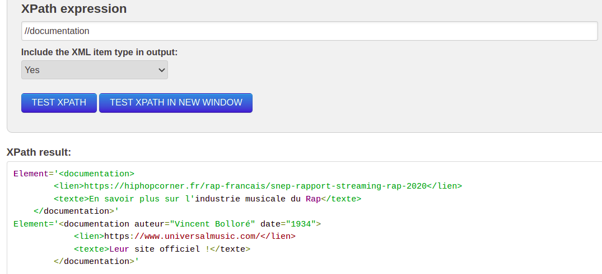
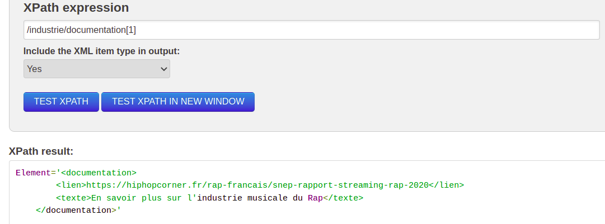
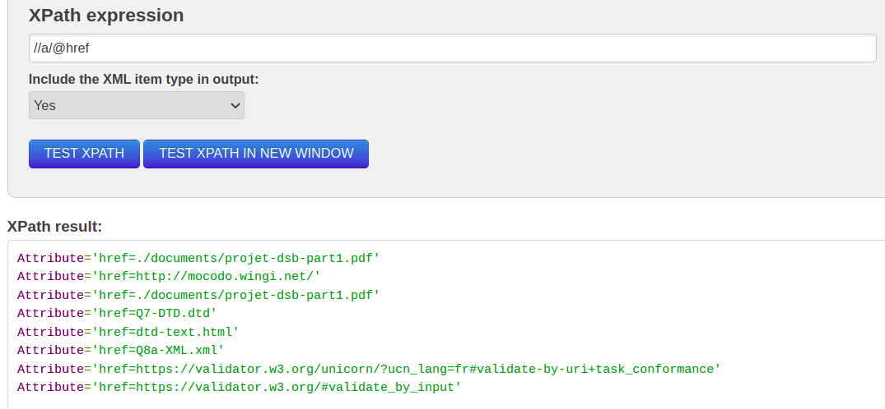
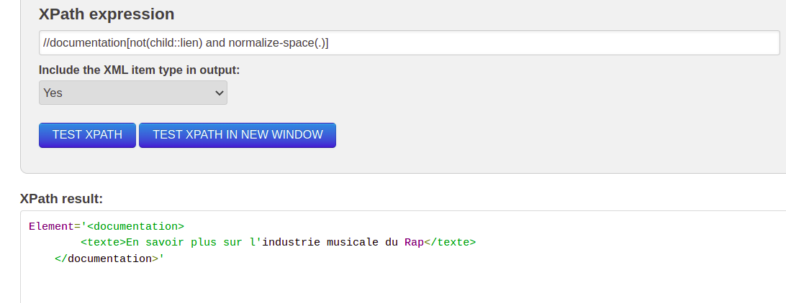
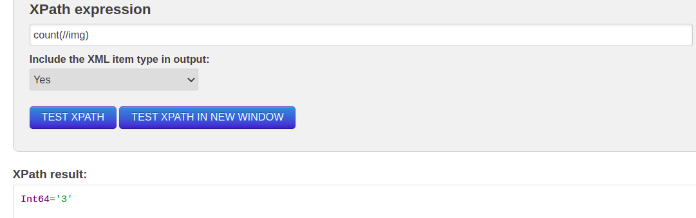

Requêtes XPATH
Nous avons utilisé le site web 'freeformatter.com' pour nos requêtes XPATH
- doc XML : fournir les contenus des éléments 'documentation' : 
- doc XML : fournir le premier élément 'documentation' : 
- doc XML : fournir les éléments 'documentation' n’ayant pas d’élément 'lien' :
- doc XHTML : fournir les valeurs des attributs 'href' : 
- doc XHTML : compter le nombre d’images dans un document XHTML :
Nous avons ajouté dans notre XML pour cette exemple une balise documentation contenant seulement une balise 'texte'
Sur notre 'Page Principale' on a 3 images.
